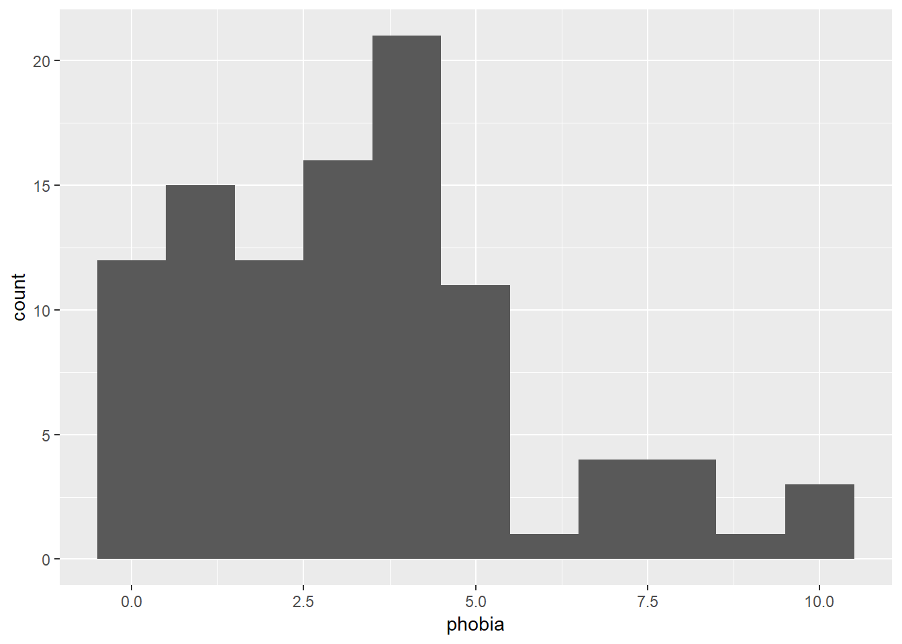
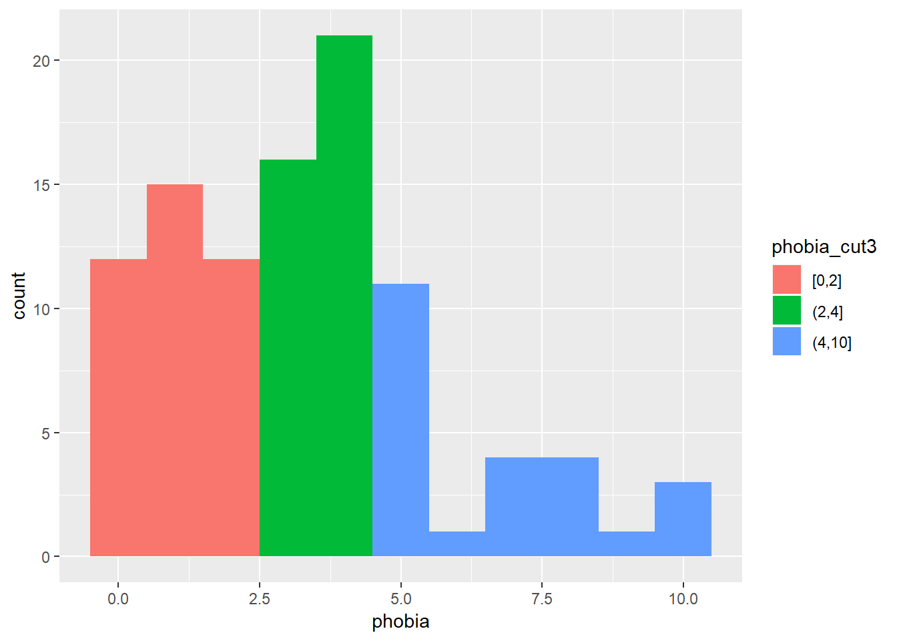
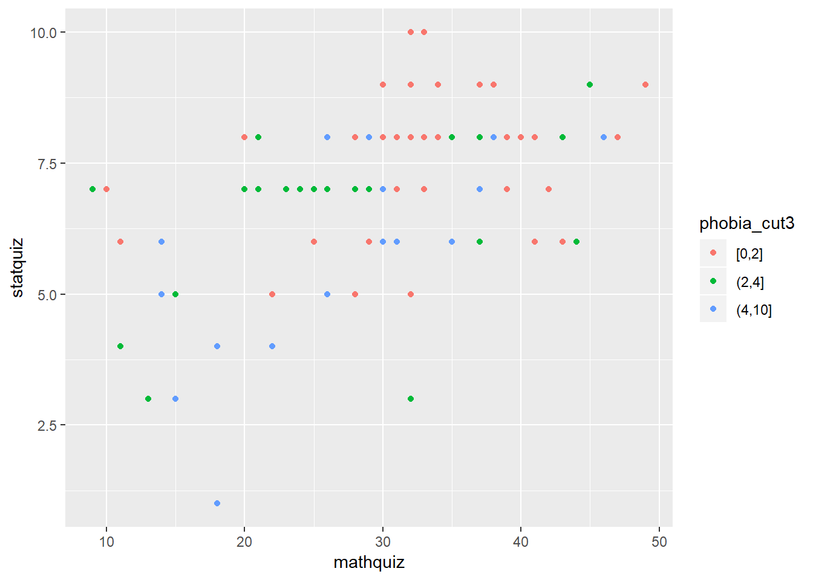

1 Example: Ihno’s Experiment
1.1 Packages
library(tidyverse)
library(haven)
library(furniture)
library(texreg)
library(stargazer)1.2 The Data
Author’s website for the textbook: http://www.psych.nyu.edu/cohen/EPS4e.html
data_ihno <- read_spss("http://www.psych.nyu.edu/cohen/Ihno_dataset.sav") %>%
dplyr::rename_all(tolower) %>%
dplyr::mutate(gender = factor(gender,
levels = c(1, 2),
labels = c("Female",
"Male"))) %>%
dplyr::mutate(major = factor(major,
levels = c(1, 2, 3, 4,5),
labels = c("Psychology",
"Premed",
"Biology",
"Sociology",
"Economics"))) %>%
dplyr::mutate(reason = factor(reason,
levels = c(1, 2, 3),
labels = c("Program requirement",
"Personal interest",
"Advisor recommendation"))) %>%
dplyr::mutate(exp_cond = factor(exp_cond,
levels = c(1, 2, 3, 4),
labels = c("Easy",
"Moderate",
"Difficult",
"Impossible"))) %>%
dplyr::mutate(coffee = factor(coffee,
levels = c(0, 1),
labels = c("Not a regular coffee drinker",
"Regularly drinks coffee")))
data_ihno## # A tibble: 100 x 18
## sub_num gender major reason exp_cond coffee num_cups phobia prevmath
## <dbl> <fct> <fct> <fct> <fct> <fct> <dbl> <dbl> <dbl>
## 1 1 Female Psyc~ Advis~ Easy Regul~ 0 1 3
## 2 2 Female Psyc~ Perso~ Easy Not a~ 0 1 4
## 3 3 Female Psyc~ Progr~ Easy Not a~ 0 4 1
## 4 4 Female Psyc~ Progr~ Easy Not a~ 0 4 0
## 5 5 Female Psyc~ Progr~ Easy Not a~ 1 10 1
## 6 6 Female Psyc~ Progr~ Moderate Regul~ 1 4 1
## 7 7 Female Psyc~ Progr~ Moderate Not a~ 0 4 2
## 8 8 Female Psyc~ Advis~ Moderate Regul~ 2 4 1
## 9 9 Female Psyc~ Progr~ Moderate Not a~ 0 4 1
## 10 10 Female Psyc~ Progr~ Moderate Regul~ 2 5 0
## # ... with 90 more rows, and 9 more variables: mathquiz <dbl>,
## # statquiz <dbl>, exp_sqz <dbl>, hr_base <dbl>, hr_pre <dbl>,
## # hr_post <dbl>, anx_base <dbl>, anx_pre <dbl>, anx_post <dbl>1.2.1 Describe the Raw Data
1.2.1.1 Table of Summary Statistics
data_ihno %>%
furniture::table1(phobia, statquiz, mathquiz,
test = TRUE,
output = "markdown")| Mean/Count (SD/%) | |
|---|---|
| n = 100 | |
| phobia | |
| 3.3 (2.4) | |
| statquiz | |
| 6.9 (1.7) | |
| mathquiz | |
| 29.1 (9.5) |
data_ihno %>%
dplyr::mutate(phobia_cut3 = cut(phobia,
breaks = c(0, 2, 4, 10),
include.lowest = TRUE)) %>%
furniture::table1(phobia, statquiz, mathquiz,
splitby = ~ phobia_cut3,
test = TRUE,
output = "markdown")| [0,2] | (2,4] | (4,10] | P-Value | |
|---|---|---|---|---|
| n = 39 | n = 37 | n = 24 | ||
| phobia | <.001 | |||
| 1.0 (0.8) | 3.6 (0.5) | 6.7 (1.8) | ||
| statquiz | 0.001 | |||
| 7.6 (1.3) | 6.6 (1.6) | 6.1 (2.0) | ||
| mathquiz | 0.014 | |||
| 32.6 (8.5) | 26.5 (9.8) | 26.8 (8.9) |
1.2.1.2 Plot of Raw Data
data_ihno %>%
ggplot() +
aes(phobia) +
geom_histogram(binwidth = 1)
data_ihno %>%
dplyr::mutate(phobia_cut3 = cut(phobia,
breaks = c(0, 2, 4, 10),
include.lowest = TRUE)) %>%
ggplot() +
aes(phobia,
fill = phobia_cut3) +
geom_histogram(binwidth = 1)
data_ihno %>%
ggplot() +
aes(x = mathquiz,
y = statquiz) +
geom_point()## Warning: Removed 15 rows containing missing values (geom_point).
data_ihno %>%
dplyr::mutate(phobia_cut3 = cut(phobia,
breaks = c(0, 2, 4, 10),
include.lowest = TRUE)) %>%
ggplot() +
aes(x = mathquiz,
y = statquiz,
color = phobia_cut3) +
geom_point()## Warning: Removed 15 rows containing missing values (geom_point).
data_ihno %>%
dplyr::mutate(phobia_cut3 = cut(phobia,
breaks = c(0, 2, 4, 10),
include.lowest = TRUE)) %>%
ggplot() +
aes(x = mathquiz,
y = statquiz) +
geom_count() +
facet_grid(. ~ phobia_cut3)## Warning: Removed 15 rows containing non-finite values (stat_sum).
1.3 Regression
1.3.1 Fit Nested Models (bottom up)
fit_ihno_lm_0 <- lm(statquiz ~ 1,
data = data_ihno %>%
dplyr::filter(complete.cases(mathquiz, statquiz, phobia)))
fit_ihno_lm_1 <- lm(statquiz ~ mathquiz,
data = data_ihno %>%
dplyr::filter(complete.cases(mathquiz, statquiz, phobia)))
fit_ihno_lm_2 <- lm(statquiz ~ phobia,
data = data_ihno %>%
dplyr::filter(complete.cases(mathquiz, statquiz, phobia)))
fit_ihno_lm_3 <- lm(statquiz ~ mathquiz + phobia,
data = data_ihno %>%
dplyr::filter(complete.cases(mathquiz, statquiz, phobia)))
fit_ihno_lm_4 <- lm(statquiz ~ mathquiz*phobia,
data = data_ihno %>%
dplyr::filter(complete.cases(mathquiz, statquiz, phobia)))
texreg::screenreg(list(fit_ihno_lm_0, fit_ihno_lm_1, fit_ihno_lm_2, fit_ihno_lm_3, fit_ihno_lm_4),
custom.model.names = c("No Predictors", "Only Math Quiz", "Only Phobia", "Both IVs", "Add Interaction"))##
## =======================================================================================
## No Predictors Only Math Quiz Only Phobia Both IVs Add Interaction
## ---------------------------------------------------------------------------------------
## (Intercept) 6.85 *** 4.14 *** 7.65 *** 5.02 *** 5.60 ***
## (0.19) (0.53) (0.29) (0.63) (0.91)
## mathquiz 0.09 *** 0.08 *** 0.06 *
## (0.02) (0.02) (0.03)
## phobia -0.25 *** -0.16 * -0.34
## (0.07) (0.07) (0.21)
## mathquiz:phobia 0.01
## (0.01)
## ---------------------------------------------------------------------------------------
## R^2 0.00 0.26 0.13 0.31 0.31
## Adj. R^2 0.00 0.25 0.12 0.29 0.29
## Num. obs. 85 85 85 85 85
## RMSE 1.74 1.50 1.63 1.46 1.46
## =======================================================================================
## *** p < 0.001, ** p < 0.01, * p < 0.051.3.2 Compare Models
Likelihood Ratio Test of Nested Models
anova(fit_ihno_lm_0, fit_ihno_lm_1)## Analysis of Variance Table
##
## Model 1: statquiz ~ 1
## Model 2: statquiz ~ mathquiz
## Res.Df RSS Df Sum of Sq F Pr(>F)
## 1 84 253.01
## 2 83 187.75 1 65.26 28.85 6.999e-07 ***
## ---
## Signif. codes: 0 '***' 0.001 '**' 0.01 '*' 0.05 '.' 0.1 ' ' 1anova(fit_ihno_lm_0, fit_ihno_lm_2)## Analysis of Variance Table
##
## Model 1: statquiz ~ 1
## Model 2: statquiz ~ phobia
## Res.Df RSS Df Sum of Sq F Pr(>F)
## 1 84 253.01
## 2 83 220.73 1 32.282 12.139 0.0007912 ***
## ---
## Signif. codes: 0 '***' 0.001 '**' 0.01 '*' 0.05 '.' 0.1 ' ' 1anova(fit_ihno_lm_1, fit_ihno_lm_3)## Analysis of Variance Table
##
## Model 1: statquiz ~ mathquiz
## Model 2: statquiz ~ mathquiz + phobia
## Res.Df RSS Df Sum of Sq F Pr(>F)
## 1 83 187.75
## 2 82 175.19 1 12.565 5.8814 0.0175 *
## ---
## Signif. codes: 0 '***' 0.001 '**' 0.01 '*' 0.05 '.' 0.1 ' ' 1anova(fit_ihno_lm_3, fit_ihno_lm_4)## Analysis of Variance Table
##
## Model 1: statquiz ~ mathquiz + phobia
## Model 2: statquiz ~ mathquiz * phobia
## Res.Df RSS Df Sum of Sq F Pr(>F)
## 1 82 175.19
## 2 81 173.50 1 1.6894 0.7887 0.37711.3.3 Final Model
texreg::screenreg(fit_ihno_lm_3,
custom.model.names = "Main Effects Model",
ci.force = TRUE,
caption = "Final Model for Stat's Quiz",
single.row = TRUE)##
## ===================================
## Main Effects Model
## -----------------------------------
## (Intercept) 5.02 [ 3.79; 6.25] *
## mathquiz 0.08 [ 0.05; 0.12] *
## phobia -0.16 [-0.29; -0.03] *
## -----------------------------------
## R^2 0.31
## Adj. R^2 0.29
## Num. obs. 85
## RMSE 1.46
## ===================================
## * 0 outside the confidence interval1.3.4 Plot Model
effects::Effect(focal.predictors = c("mathquiz", "phobia"),
mod = fit_ihno_lm_3,
xlevels = list(phobia = c(0, 5, 10))) %>%
data.frame %>%
dplyr::mutate(phobia = factor(phobia)) %>%
ggplot() +
aes(x = mathquiz,
y = fit,
fill = phobia,
color = phobia) +
geom_ribbon(aes(ymin = fit - se,
ymax = fit + se),
alpha = .3) +
geom_point() +
geom_line() +
theme_bw() +
labs(x = "Score on Math Quiz",
y = "Estimated Marginal Mean\nScore on Stat Quiz",
fill = "Self Rated\nMath Phobia",
color = "Self Rated\nMath Phobia") +
theme(legend.background = element_rect(color = "black"),
legend.position = c(0, 1),
legend.justification = c(0, 1))
Figure 1.1: Illustration of the effects of the background math quiz score and self-rated math phobia on the baseline statistics quiz. Confidence bands represent one standard error from the mean.